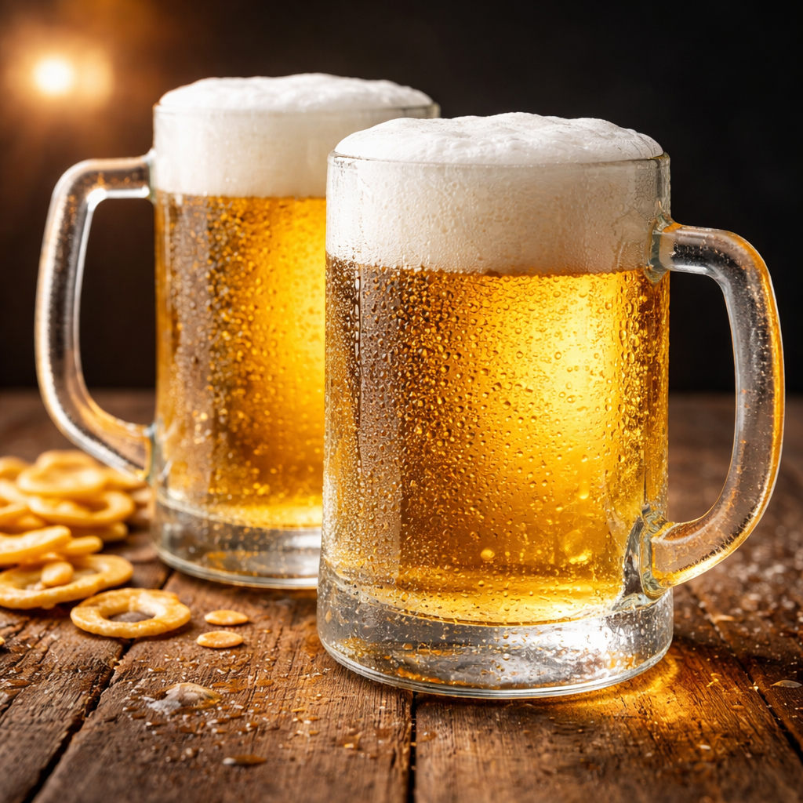
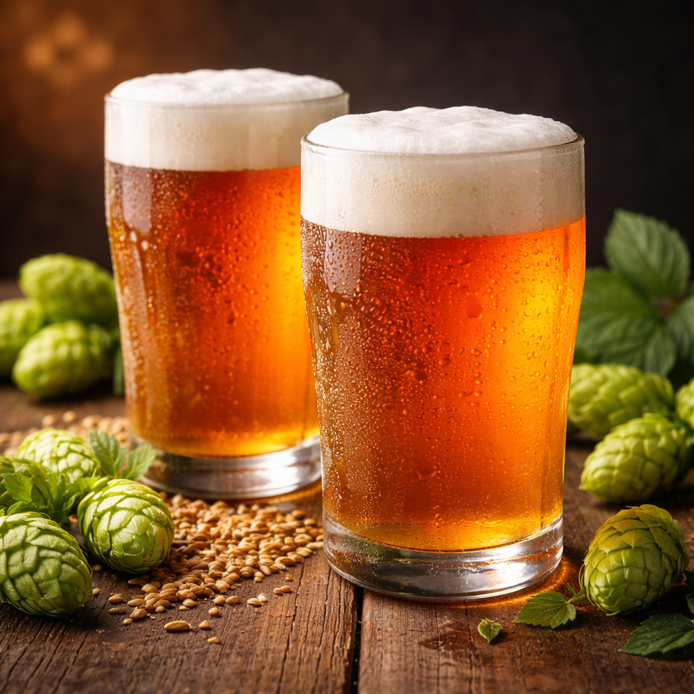
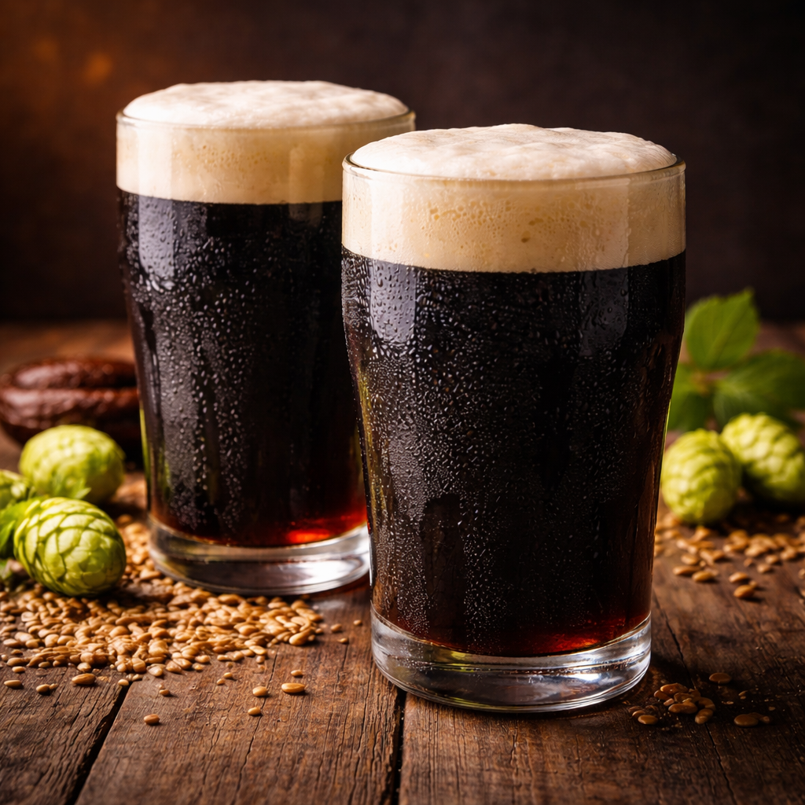
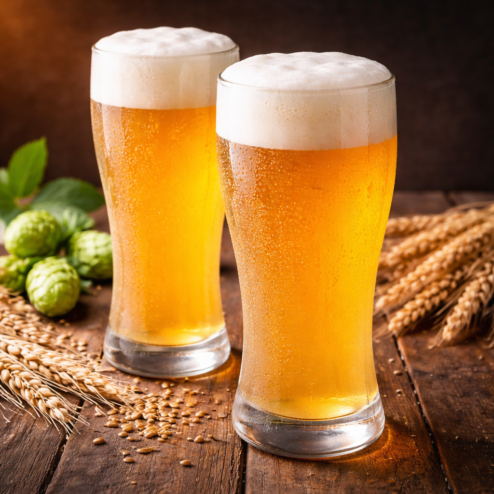

Galeria de Fotos: O Universo Cervejeiro em Imagens
Explore a diversidade visual das cervejas, desde os tons dourados das Lagers até a escuridão profunda das Stouts, além dos copos ideais para cada degustação.

Pilsen Tradicional
A cerveja mais consumida no mundo, conhecida por sua cor dourada e refrescância.

India Pale Ale (IPA)
Destaque para o amargor intenso e aromas cítricos provenientes do lúpulo.

Stout / Porter
Cervejas escuras com notas marcantes de café, chocolate e malte torrado.

Weissbier (Trigo)
Cerveja turva de origem alemã, com aromas que lembram banana e cravo.
A Importância do Copo Correto
Você sabia que o formato do copo influencia na formação da espuma e na percepção dos aromas? Confira alguns modelos clássicos:
| Tipo de Copo | Estilo Recomendado | Função |
|---|---|---|
| Pint | IPAs e Stouts | Versátil, facilita o serviço e a visualização. |
| Tulipa | Belgas e Fortes | Captura e concentra os aromas complexos. |
| Weizen | Cervejas de Trigo | Longo para comportar o volume e a espuma abundante. |